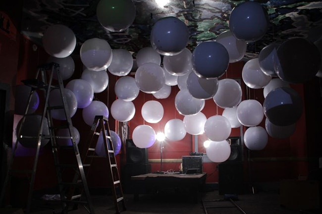
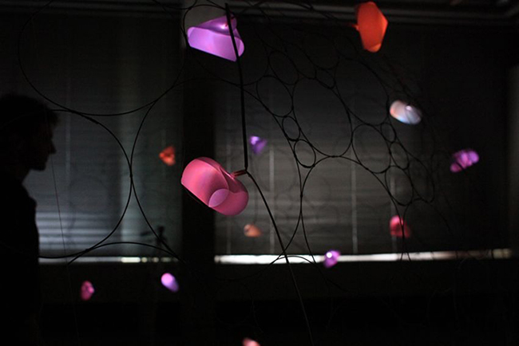
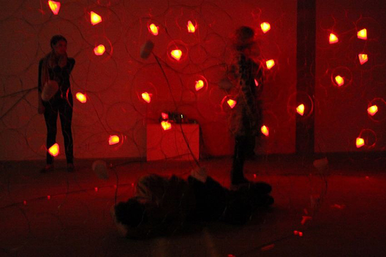

ABOUT
Sam Hart is a scientist, media artist, and writer based in New York. His current research interests include the behavior and politics of emergent systems, epistemologies of scale, local equilibria, and conceptual model making. Sam studied chemical physics and structural biology at Wesleyan University under Dr. David Beveridge and currently works as a staff scientist at Sloan Kettering's Human Oncology & Pathogenesis Program, under Dr. Cameron Brennan, where he studies neuroligical cancer evolution. Sam is co-founder and editor of VVVNT.com, a web journal, forum, and project space for discussion of transdisciplinary ideas. He, together with sound artist Sam Silver, comprise the 'future media' project A // V CLUB. Sam is also a founding member of the New York chapter of online underground electronic music show Boiler Room, he has worked for MoMA PS1 in the production of sets for their Warmup concert series, and as Technical Director of the Brooklyn media arts gallery 319 Scholes. His writing can be found at Rhizome.org, Dazed and Confused, and VVVNT. Sam is also an avid sailor, having grown up racing small boats.
PROJECTS
Life on Film by Stephen Fortune at AND Festival (consult)
The Matter 2012: Art & Archive by David Gordon at Judson Memorial Church (consult)
Art Hack Day at 319 Scholes (production)
Nightclub set produced for the film "February" designed in collaboration with Jessica Placzek.



PUBLICATIONS
VVVNT
Engineered Ecologies: An Interview with Julian Oliver
Dazed & Confused
Profile: Extrapolation Factory
Future Organisms
Rhizome
Sampling Sonic Culture: MoMA’s Cautious Entry Into a World of Noise
Cell
The Somatic Genomic Landscape of Glioblastoma
EXHIBITIONS
2013
The Current Sessions: Volume IV, Issue I. (guest curator)
Evil Media distribution Center by Matsuko Yokokoji & Graham Harwood (contributor)
• Exhibited as part of The Ruin at the Netherlands Architecture Institute - Rotterdam, Netherlands• Transmediale - Berlin, Germany
2010
Self Assembly - Wesleyan University, Zilkha Gallery - Middletown, Connecticut, US (solo)



